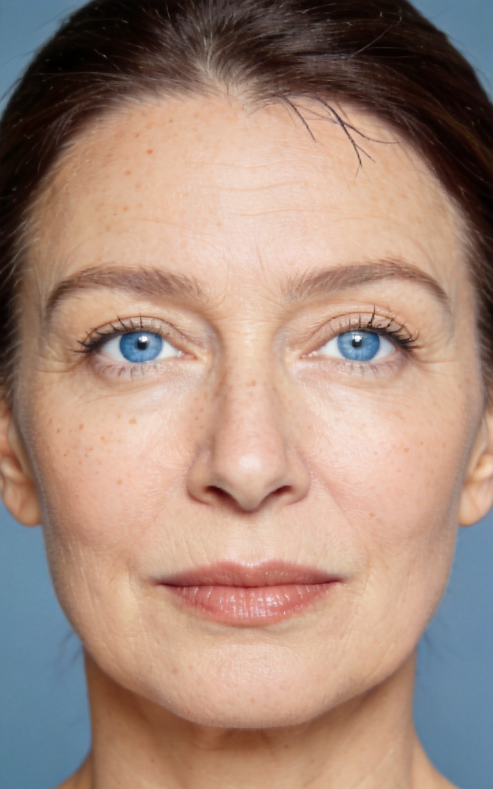
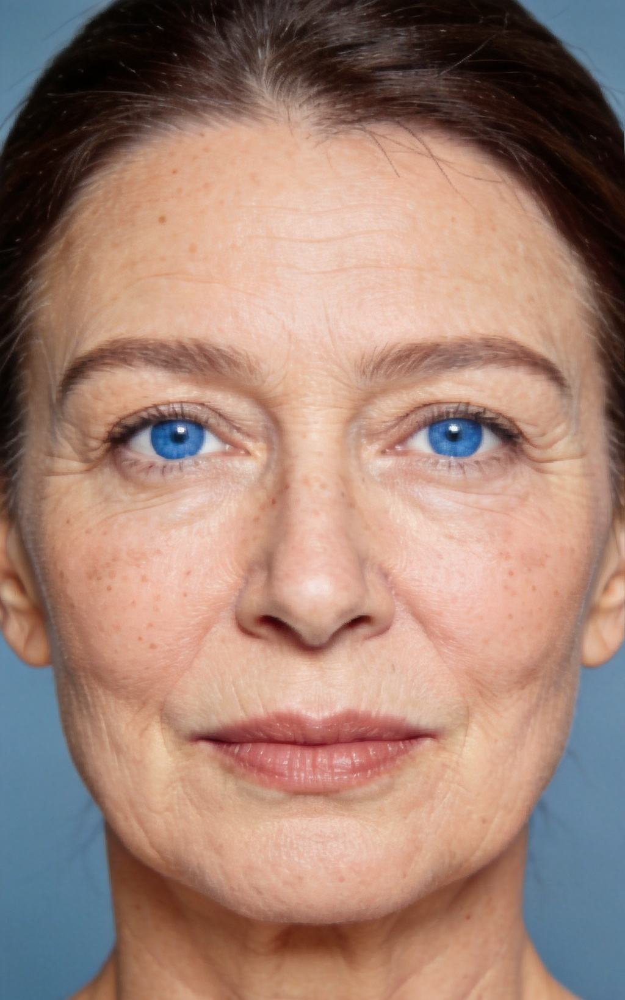

La méthode
Le Mirror Face Lift.
Une méthode de lifting qui commence par lire le visage, son ossature, ses volumes et son asymétrie propre, avant de chercher à le corriger.
Le principe
Lire le visage avant de le corriger
Chaque consultation commence par une analyse de l'ossature, des volumes et de l'asymétrie naturelle du patient — au miroir, en position naturelle puis inclinée. C'est cette lecture qui guide ensuite la technique, jamais l'inverse.
Le principe
Lire l'asymétrie plutôt que la gommer
Aucun visage n'est symétrique. Le Dr Divaris considère cette asymétrie naturelle de l'ordre de quelques degrés dans l'obliquité de la mâchoire d'un côté à l'autre non comme une anomalie, mais comme la signature structurelle du patient.
« Chaque être humain porte en lui la plus belle des sculptures : son crâne. » Le visage est abordé comme une sculpture tridimensionnelle, non comme une surface : l'intervention respecte l'architecture osseuse tout en harmonisant les tissus mous.
Faites glisser le curseur ci-contre →


Résultat présenté à titre illustratif. L'indication et l'évolution varient selon l'anatomie de chaque patient.
Concrètement
Ce que la méthode change
Une analyse personnalisée, deux vecteurs chirurgicaux et une redistribution des tissus dans les trois dimensions.
- 01
Observer le visage au miroir
En consultation, le miroir tenu à environ 45° aide à visualiser la migration naturelle des tissus et à distinguer les deux côtés du visage. Les photographies sous plusieurs angles complètent cette analyse.
- 02
Respecter chaque hémi-visage
Le côté droit et le côté gauche ne vieillissent pas exactement de la même façon. Les axes de correction sont adaptés à leur structure osseuse et à la position de leurs compartiments graisseux.
- 03
Redistribuer plutôt que tirer
La technique associe un vecteur vertical pour les pommettes et un vecteur latéral adapté aux tissus profonds. L'objectif est une redistribution tridimensionnelle, sans standardiser le visage.
Trois axes
Un travail dans les trois dimensions de l'espace
Le Mirror Lift ne « tire » pas la peau : il rééquilibre les volumes selon la géométrie propre du visage.
- Axe verticalRestauration des volumes, en particulier au niveau des pommettes.
- Axe horizontalRééquilibrage selon l'obliquité individuelle du visage, en technique deep plane.
- Axe antéro-postérieurTravail en profondeur pour redéfinir le cou et le menton.
Techniques associées
Autour du Mirror Lift
Lifting cervico-facial
Repositionner les tissus profonds du visage et du cou.
→ VisageLifting du cou
Redéfinir l'angle sous le menton et la ligne mandibulaire.
→ VisageMini-lift / Soft lift
Corriger un relâchement débutant avec un geste plus limité.
→ RechercheFace Expressive Lifting (FEL)
Concept chirurgical publié, radiofréquence bipolaire.
→Recherche & distinction
Une méthode publiée.
Un travail récompensé.
Le concept du Mirror Face Lift a fait l'objet d'une publication scientifique évaluant la technique et la stabilité des résultats à un an. Ce travail a reçu le Best European Paper Award de Plastic and Reconstructive Surgery Global Open.
- 2020Article original
- 1 anSuivi postopératoire
- 2021Best European Paper
Documents originaux
Sélectionnez un document pour le consulter sans quitter la page.
Consultation
Un miroir, avant tout
La méthode se comprend surtout en consultation, miroir en main. C'est le meilleur moment pour poser vos questions.